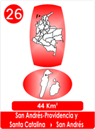
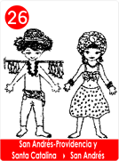
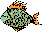

26- Leyenda De La Gratitud - S. Andrés- Providencia Y S. Catalina
- Consulta a Jesús
- Fábulas de Colombia
- Metodo Corima
- Arbol
- Flor
- Fruto
- Estrellas Pequeñas
- Nostradamus
- La Ruta del Sol
- Fabula de Corima
- Productos y Servicios
- Mensajeros Celestiales
- Juguemos
- Articulos
- Estrellas Humanas
- Herramientas
- Plantas Milagrosas
- Adorables Fechas
- Videos


"Cierto día Dios se paseaba por su Jardín, a la hora de la brisa de la tarde.
-- Gen 3,8
Y lo repitió en su bella Selva del Amazonas y entre los árboles se encontraba un guacamayo, que le habló y le dijo;
- Señor Dios, gracias por todo lo que me has dado, mis plumas de colores, mi voz y todo lo que me rodea!
- Dios se sorprendió y dijo:
- ?Quien te lo ha hecho ver, pequeño guacamayo?
- ¡La belleza de tu Creación, la maravilla de tu Providencia, que vela por todos los que has creado!
.Entonces Dios le dijo: - "¿Como te llamas pequeño? ¿Y tienes algún deseo?
- Me llaman Andrés y me dicen que además has creado mares de siete colores, con lindas criaturas, que no conozco, Gracias Señor en nombre de ellas.
- Dios sonrió, y siguió.
De pronto oyó una vocecita.
Señor Dios, mi amiguita Catalina y yo, queremos agradecerte por todo lo que nos has dado!
Dios se sorprendió de nuevo.
- !! Ni el hombre, ni su mujer, le habían dado las gracias!!!!!!!!
-" ¿Cómo te llamas pescadita? ¿Desearían algo las dos?
- Me llaman Isabel y con Catalina comentamos de tus mares de colores, con corales y algas, además dicen que hay criaturas que hacen perlas, y que hiciste montañas con tierra con flores y muchos frutos "
-
Entonces Dios volvió a sonreír.
- Al llegar a Su Reino dió, la Orden.
-Quiero colocar Tres Islas en el Mar Caribe, se celebrará la belleza y el paso de humildes criaturas, en el mar de 7 colores, como las plumas del guacamayo.
Coloquen, corales, ostras, algas y muchos peces, además agreguen montañas con flores y frutos tropicales, que se Honre la maravilla de todo lo pequeño"
La orden se cumplió, Andrés, Isabel y Catalina fueron trasladados y conocidos en el Mar Caribe, islas alejadas y pequeñas que demuestran la Providencia y el Amor que el Creador proporciona a sus criaturas.